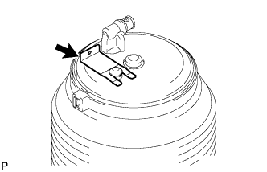

REAR PNEUMATIC CYLINDER > REMOVAL |
| 1. REMOVE REAR PNEUMATIC CYLINDER ASSEMBLY LH |
Jack up the vehicle and support the frame with safety stands.
Disconnect the height control tube (Click here).
|  |
Remove the clip on the top of the pneumatic cylinder.
 |
Place matchmarks on the nut and rear pneumatic cylinder.
| *a | Matchmark |
Remove the nut.
Discharge air from the pneumatic cylinder assembly to cause it to retract.
Remove the rear pneumatic cylinder from the rear axle housing.